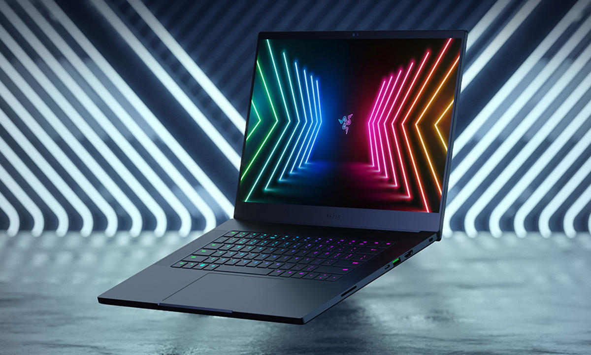

Razer Inc. (estilizado como RΛZΞR), es una compañía de fabricación de hardware para videojuegos establecida en 2005 por el empresario de Singapur Min-Liang Tan y Robert Krakoff,
después de obtener una gran inversión de Li Ka-shing y de Temasek Holdings de Singapur.
Según el Folleto informativo de Razer, Razer ha "construido el mayor ecosistema global de juegos de hardware, software y servicios".4
Razer es considerado uno de los pioneros de los deportes electrónicos, así como una de las marcas más importantes de los deportes electrónicos en la actualidad
Novedades
Razer Blade 15 Advanced

Estamos ante uno de los portátiles más potentes del mundo,
y eso se nota en una hoja de especificaciones impecable.
En primer lugar, por su procesador principal, Core i7-10875H que con sus ocho núcleos
(parte de los cuales pueden alcanzar los 5,1 Ghz en situaciones exigentes)
da margen de maniobra tanto para trabajar como para jugar sin pérdida de fluidez.
Su potente GPU es responsable de un rendimiento fantástico en videojuegos, y es
toda una declaración de intenciones para otros fabricantes que quieren competir en este nicho de mercado.
Componentes y especificaciones
Pantalla: 15,6 pulgadas, QHD (2.560 x 1.440 px)
240 Hz, 100% sRGB, calibración de fábrica
Procesador: Intel Core i7-10875H. 8 núcleos a 2,3 GHz (hasta 5,1 GHz en modo Turbo)
Project Valerie; un prototipo de laptop creado por Razer
que promete terminar con uno de las principales limitantes que tienen
las portátiles a la hora de jugar: su pantalla."Las configuraciones de escritorio con múltiples monitores se están volviendo una necesidad para los profesionales,
los creadores y los jugadores. Hemos diseñado por primera vez una solución que los usuarios pueden llevar consigo.
Project Valerie promete toda la funcionalidad de tres pantallas sin ninguna complicación” dijo Min-Liang Tan, cofundador y CEO de Razer
Componentes y especificaciones
Pantalla: tres pantallas de 17,3 pulgadas a resolución 4K.
Procesador:procesador de última generación Intel Core i7-7700K
Memoria RAM:32GB de RAM.
Tarjetas gráficas:Dos tarjetas gráficas NVIDIA GeForce GTX 1080 de 8GB